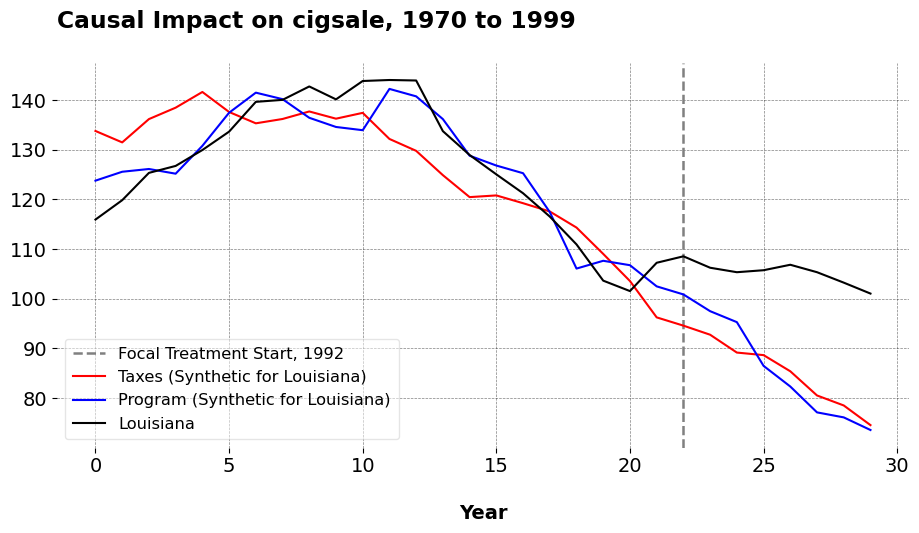

import pandas as pd
from mlsynth import SI
# Load the data
url = "https://raw.githubusercontent.com/jehangiramjad/tslib/refs/heads/master/tests/testdata/prop99.csv"
df = pd.read_csv(url)
last_column = df.columns[-1]
df_filtered = df[df[last_column] == 2]
columns_to_keep = list(df.columns[0:4]) + [df.columns[7]]
df_filtered = df_filtered[columns_to_keep]
sort_columns = [df_filtered.columns[1], df_filtered.columns[2]]
df_filtered = df_filtered.sort_values(by=sort_columns)
df_filtered = df_filtered[df_filtered[df_filtered.columns[2]] < 2000]
df_filtered['SynthInter'] = ((df_filtered[df_filtered.columns[0]] == 'LA') &
(df_filtered[df_filtered.columns[2]] >= 1992)).astype(int)
tax_states = ['MA', 'AZ', 'OR', 'FL'] # Massachusetts, Arizona, Oregon, Florida abbreviations
df_filtered['Taxes'] = (df_filtered[df_filtered.columns[0]].isin(tax_states)).astype(int)
program_states = ['AK', 'HI', 'MD', 'MI', 'NJ', 'NY', 'WA', 'CA']
df_filtered['Program'] = (df_filtered[df_filtered.columns[0]].isin(program_states)).astype(int)
df_filtered = df_filtered.rename(columns={"Data_Value": "cigsale", "LocationDesc": "State"})Synthetic Control Methods for Personalized Causal Inference
Causal Inference
Econometrics
Most data scientists who use synthetic control methods likely aim to estimate the counterfactual outcome for a treated unit if it had not been treated at all. This framework works quite neatly in the setting with a dummy treatment status (exposed or not exposed). But very often, there are a grab bag of policies we concern ourselves with that oftentimes may affect the exact same outcome. A retail chain might roll out different loyalty programs across its stores. For instance, Store A adopts a cash-back program (Program A), Store B adopts a points-based program (Program B), and Store C adopts a discount coupon program (Program C). Observing outcomes like revenue and customer visits under each program, we are typically concered with the outcome under the scenario of no treatment. A research question could be how the store with the cash backprogram would have fared had it done nothing at all. In policy, cities or states implement different public health interventions targeting soda consumption. For example, City 1 bans the sale of large sodas, City 2 imposes a tax on sugary drinks, and City 3 mandates calorie labeling on menus.
But what if we wish to estimate the counterfactual for a given unit as if it did another policy from what it actually did. In other words, How would Store A have performed if it had adopted Program B instead of Program A? What if City 1 had imposed a soda tax instead of banning large sodas? How would health metrics evolved if the other policy was done instead? Plenty of academic papers have addressed this idea before, but only to assess the counterfactual scenario of no tax at all.
This is where the Synthetic Interventions estimator is useful. SI estimates how a treated unit (or even a never treated unit) would have performed under an intervention it did not actually receive. Per the examples above, one could construct a synthetic version of Store A under Program B, based on observed outcomes from stores that actually implemented Program B. Similarly, we could construct a synthetic version of City/State 1 under the soda tax policy (instead of the ban), using observed outcomes from cities that actually taxed sugary drinks. SI substantially expands the range of counterfactual questions that can be credibly answered.
Before we get to business, I should note how this is a personal milestone for me. SI was likely the first estimator that really got me interested in the extensions to SCM. You see, I became a PHD student right around the time the pandemic began, and we began to see papers like this circulate that claimed to be able to estimate things like “what would NYC’s COVID rate look like had it locked down earlier than it actually did”. I had never heard of tensors, or really even matrices at the time, so I would always ask “wow, how can we even do this?” So, on my 4th year of school, it is very nice to not just understand the estimator, but be able to share it with others.
Notation
Scalars are denoted by lowercase italic letters such as \(g\). Vectors are denoted by bold lowercase letters such as \(\mathbf{v} \in \mathbb{R}^n\). Matrices are denoted by bold uppercase letters such as \(\mathbf{A} \in \mathbb{R}^{m \times n}\). Sets are denoted by calligraphic letters such as \(\mathcal{N}\) and \(\mathcal{T}\). The cardinality of a finite set \(\mathcal{A}\) is denoted \(|\mathcal{A}|\). Let \(\mathcal{N} = \{1, 2, \dots, N\}\) index the units and \(\mathcal{T} = \{1, 2, \dots, T\}\) index time periods. Let \(\mathcal{D} = \{0, 1, \dots, D\}\) index treatment statuses, with \(0\) denoting the untreated condition. Each unit \(j \in \mathcal{N}\) is assigned a treatment \(d_j \in \mathcal{D}\).
Define \(T_0 < T\) as the final pre-treatment period and partition \(\mathcal{T}\) into pre-treatment periods \(\mathcal{T}_{\text{pre}} = \{1, 2, \dots, T_0\}\) and post-treatment periods \(\mathcal{T}_{\text{post}} = \{T_0 + 1, \dots, T\}\). Let \(\mathbf{y}_j^{\text{pre}} \in \mathbb{R}^{T_0}\) denote the pre-treatment outcome vector for unit \(j\) and \(\mathbf{y}_j^{\text{post}} \in \mathbb{R}^{T - T_0}\) denote its post-treatment outcomes. For a group of units assigned to treatment \(d\), define \(\mathbf{Y}_d^{\text{pre}} \in \mathbb{R}^{T_0 \times N_d}\) as the matrix stacking the pre-treatment outcomes of units \(j \in \mathcal{N}_d\), and \(\mathbf{Y}_d^{\text{post}} \in \mathbb{R}^{T - T_0 \times N_d}\) as the corresponding post-treatment outcome matrix. Let \(\mathcal{N}_d = \{ j \in \mathcal{N} \mid d_j = d \}\) denote the set of units exposed to treatment \(d\). At each \((t, j)\) pair, we observe only \(y_{t j} = y^{\ast}_{t j d_j}\), the realized outcome under the assigned treatment. Our goal is to estimate the counterfactual post-treatment trajectory \(\{ y^{\ast}_{t 1 d} \}_{t \in \mathcal{T}_{\text{post}}}\) for a focal unit \(j = 1\) that actually received treatment \(d_1\), where \(d \neq d_1\) represents an alternative treatment.
Econometric Model
The paper assumes that potential outcomes admit a low-rank latent factor structure. Formally, each potential outcome \(y_{t j d}^{\ast}\) for unit \(j\) at time \(t\) under treatment \(d\) is generated by \[ y_{t j d}^{\ast} = \mathbf{l}_t^\top \mathbf{f}_j^{(d)} + \varepsilon_{t j d}, \] where \(\mathbf{l}_t \in \mathbb{R}^r\) is a vector of time-specific latent factors, \(\mathbf{f}_j^{(d)} \in \mathbb{R}^r\) is a vector of unit- and treatment-specific loadings, and \(\varepsilon_{t j d}\) is an idiosyncratic error term with mean zero. The dimension \(r\) is assumed to be small relative to \(T\) and \(N\).
The interactive structure implies that the tensor of potential outcomes across \((t, j, d)\) admits a low-rank decomposition. The principal components of the pre-treatment donor matrix \(\mathbf{Y}_d^{\text{pre}}\) consistently estimate the column space of \(\{ \mathbf{l}_t \}\) up to rotation. Consequently, by projecting pre-treatment outcomes onto this estimated subspace and regressing the treated unit onto the donors, we can recover consistent estimates of the treated unit’s counterfactual trajectory under alternative treatments. SI relies on assumptions similar to SCMs. Aside from low-rankness, we also presume the latent factor structure is stable across treatments and over time. The factors \(\mathbf{l}_t\) and loadings \(\mathbf{f}_j^{(d)}\) do not change discontinuously due to treatment assignment. Third, the donor units assigned to the alternative treatment \(d\) span the relevant factor space needed to approximate the treated unit’s pre-treatment outcomes. Fourth, the idiosyncratic error terms \(\varepsilon_{t j d}\) are mean-zero and satisfy weak regularity conditions such as independence across units or bounded variance. Finally, there is sufficient pre-treatment data to accurately estimate the principal components of the donor matrix.
As we can see, all of this is more or less pretty standard.
Recalling PCR
Practically, SI simply applies PCR to the pre-treatment matrix of units assigned to the alternative treatment \(d\). To estimate the counterfactual trajectory under an alternative treatment \(d \neq d_1\), we apply singular value decomposition SVD to the pre-treatment donor matrix \(\mathbf{Y}_d^{\text{pre}} \in \mathbb{R}^{T_0 \times N_d}\). This yields the decomposition \[ \mathbf{Y}_d^{\text{pre}} = \mathbf{U} \mathbf{\Sigma} \mathbf{V}^\top, \] where \(\mathbf{U} \in \mathbb{R}^{T_0 \times T_0}\) contains the left singular vectors, \(\mathbf{\Sigma} \in \mathbb{R}^{T_0 \times N_d}\) is the diagonal matrix of singular values, and \(\mathbf{V} \in \mathbb{R}^{N_d \times N_d}\) contains the right singular vectors. To obtain a low-dimensional representation, we truncate the decomposition at rank \(r \leq T_0\) via Universal Singular Value Thresholding. Let \(\mathbf{U}_r \in \mathbb{R}^{T_0 \times r}\) denote the first \(r\) columns of \(\mathbf{U}\), and let \(\mathbf{\Sigma}_r \in \mathbb{R}^{r \times r}\) denote the leading \(r\) singular values on the diagonal. Define the reduced-rank basis \[ \tilde{\mathbf{Y}}_d^{\text{pre}} = \mathbf{U}_r \mathbf{\Sigma}_r. \]
We then project the treated unit’s pre-treatment outcomes \(\mathbf{y}_1^{\text{pre}} \in \mathbb{R}^{T_0}\) onto the reduced rank donor space by solving the program \[ \mathbf{w}^\ast = \underset{\mathbf{w} \in \mathbb{R}^{N_d}}{\operatorname*{argmin}} \left\| \mathbf{y}_1^{\text{pre}} - \tilde{\mathbf{Y}}_d^{\text{pre}}\mathbf{w} \right\|_2^2. \]
This yields a weight vector \(\mathbf{w}^{\ast}\) over the donor units in \(\mathcal{N}_d\), constrained to lie in the subspace spanned by the leading principal components. The estimated counterfactual trajectory for the unit of interest under treatment \(d\) is then constructed by applying these weights to the observed post-treatment outcomes: \[ \hat{\mathbf{y}}_1^{\text{post}} = \tilde{\mathbf{Y}}_d^{\text{post}} \mathbf{w}^\ast. \]
This quantity serves as an estimate for \(\{y^{\ast}_{t 1 d}\}_{t \in \mathcal{T}_{\text{post}}}\), the counterfactual outcomes that unit 1 would have experienced had it received treatment \(d\) instead of \(d_1\).
SI in mlsynth
Now I will give an example of how to use SI for your own applied work. As ususal, in order to properly implement this, we begin by installing mlsynth from my Github
pip install -U git+https://github.com/jgreathouse9/mlsynth.gitNext we load the Proposition 99 data, using the dataset that has all of the states in the United States.
We begin with simple data cleaning. All we do is keep the relevant metrics, setting a treatment variable “SynthInter” to be 1 if the year is greater than or equal to 1992 and the unit of interest is Louisiana. I choose 1992 because this is the year Massachusetts passed its anti tobacco policy. Note that no policy in fact happened in Louisiana, so we will see the effect of keeping the status quo of no tobacco control policy at all. We then define as an indicator which states did the taxes. According to Abadie’s 2010 paper those states are Massachusetts, Arizona, Oregon, and Florida. We also define an indicator for states that did an anti-tobacco statewide program. This way, we can see how per capita smoking would have evolved under either policy. Under the hood, we just loop through each of the different policies the user specifies.
df_filtered = df_filtered.rename(columns={"Data_Value": "cigsale", "LocationDesc": "State"})
config = {
"df": df_filtered,
"outcome": 'cigsale',
"treat": 'SynthInter',
"unitid": 'State',
"time": 'Year',
"display_graphs": True,
"save": False,
"counterfactual_color": ["red", "blue"],
"inters": ["Taxes", "Program"]
}
arco = SI(config).fit()
For Louisiana, the ATT of keeping the status quo relative to the state-wide tobacco program maintained per capita consumption 19.134 higher than what it would have been otherwise. The ATT of not passing taxes on tobacco, compared to taxes, mainatined the same at roughly 19.77 higher than what would have been otherwise. To me, these findings are not very surprising: “Anti tobacco programs/taxes reduce slightly tobacco consumption, wow, how shocking!” But now, we can actually answer these kinds of questions using econometric methods, instead of just speculating.
When we look at the dictionary that the SI class returns, we see that the policies would have been pretty effective at reducing tobacco consumption. The dictionary is policy specific, one dictionary per policy the user chooses to consider. The SI estimator also only works for 1 treated unit, however analysts can easily make (say) a list of dataframes with an indicator for each synthetic treatment and loop over them. Once they have done this, we may extract the ATT per policy, per treated unit, and compute the sample average for an event-time ATT version for a given policy across units. I do not optimize the code to do this for a few reasons: one, the more policies and treated units we have, the less efficient it becomes to estimate tractably. Furthermore, the SI estimator is about personalized causal inference. So, I will likely leave this class for users to adapt to their own purposes (with some adjustments, if demand exists for something else).
Closing Remarks
There are a few caveats to consider: for one, you likely need a lot of units that do the alternative treatment in order for SI to be effective. Again this is not voodoo or magic, it is just SCM applied using another set of treated units as our donor pool, meaning the other treated units must be informative about the pre-treatment trajectory of the target unit. This can only happen with a rich enough donor pool. We can also imagine cool extensions to this estimator, such as incorporating additional outcomes, making this into a sort of multi-dimensional SI (say, mSI-PCR) where we incorporate other outcomes into the SI objective function (maybe I’ll add this as a kind of extension to the PCR method in my Python code). We also could likely do this with other estimators too, aside from just SCM (say, one of the panel data apporaches in mlsynth).
Either way, the benefits of this estimator should be pretty clear. I suspect with more fine tuning and in the right hands, this would be completely revolutionary for policy analysts, economists, and marketing scientists. We now need not limit ourselves to simply estimating counterfactuals where no treatment ever occurs in non-experimental settings. In advertising, we can simulate how the group shown 10 ads would have converted had they been shown 5, 4, or 2 ads. In public health, we can simulate whether masking mandates or vaccine mandates (or both) save more lives. The benefit of mlsynth’s SI class is to provide these tools to the wider experimentation world so that they may be used and indeed improved more than they currently are.
Data Science for Policy Analysts: A Simple Introduction to Web Scraping
Web Scraping
Python
Forward Selected Synthetic Control
Machine Learning
Econometrics
Synthetic Controls With More Than One Outcome
Causal Inference
Econometrics
Synthetic Controls Do Not Care What Your Donors Are. So Why Do You?
Econometric Theory
Synthetic Controls With Non-Linear Outcome Trends: A Principled Approach to Extrapolation
Causal Inference
Econometrics
The Iterative Synthetic Control Method
Econometrics
The Synthetic Historical Control Method
Econometrics
What is a Synthetic Control?
Econometrics
Causal Inference
Forward Augmented Synthetic Controls
Causal Inference
Econometrics
What Are We Weighting For?
Econometric Theory
No matching items